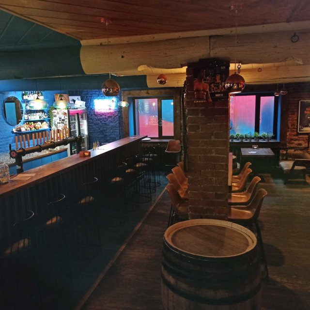
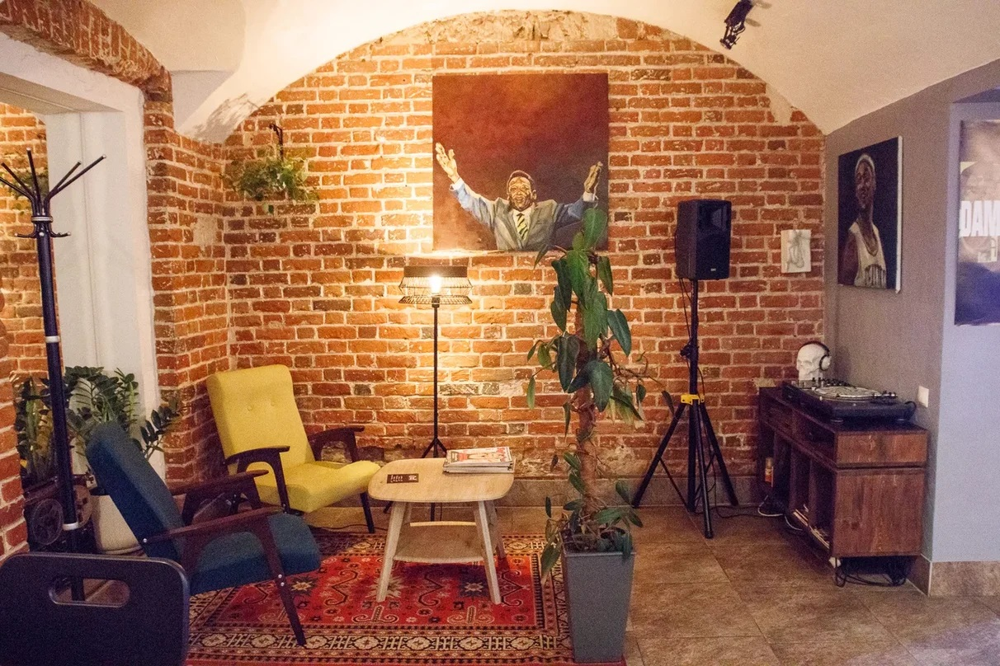
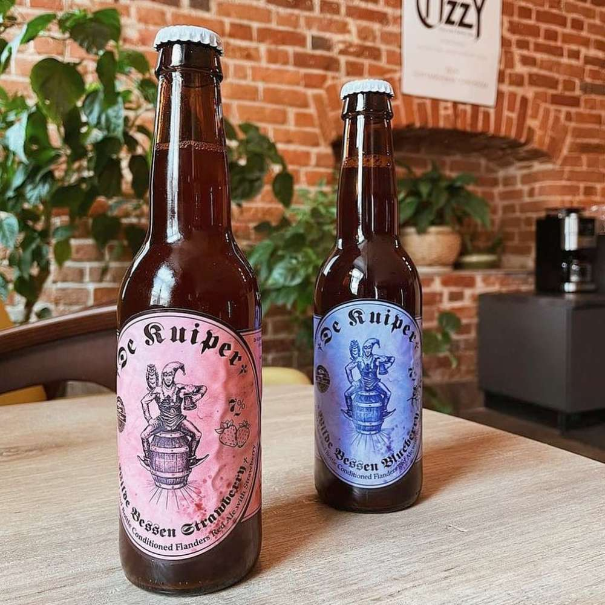

ПРОЕКТЫ
-

Villa Birra
Уютная загородная локация со своей пиццерией и пивоварней, расположенная в живописном месте недалеко от Рязани. Здесь находятся основные производственные мощности пивоварни Oka River.
-

Iggy Taproom
Бар с крафтовым и классическим пивом в историческом центре Рязани. Культовое место с большой музыкальной историей, любимое многими рязанцами и гостями города.
-

Ozzy Vinyl and Bottle Shop
Боттлшоп и бар пива в центре Рязани. Представлен большой ассортимент от лучших пивоварен России и других стран. Магазин виниловых пластинок с редкими экземплярами.
-

De Kuiper
Сайд проект Oka River, нацеленный на создание уникального кислого пива в бельгийском стиле с выдержкой в дубовых бочках и использованием других исторически сложившихся технологий.
-

Oka River Trail
Трейл забег по уникальным природным местам Рязанского района. Леса, поля, озёра и реки нашего края для всех любителей спорта.